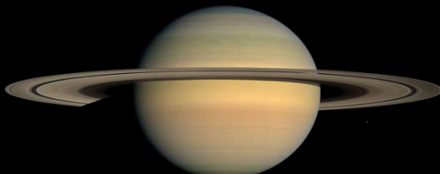

Saturno es un planeta de color amarillento y, junto a Júpiter, el más caliente. Lo más especial de Saturno son sus famosos anillos compuestos de rocas y agua helada. Algunos de sus satélites naturales son Hyperion e Japeto. Su nombre es en honor a Saturno, dios romano de la agricultura.
